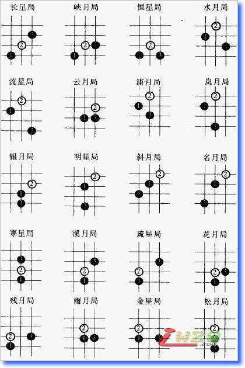
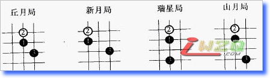

五子剑系列讲座之二【五子棋基础知识】
#1 五子剑系列讲座之二【五子棋基础知识】 作者：有志青年 发表时间：2007-12-8 13:59:47
注：五子剑五子棋系列讲座教程出自掌棋盟论坛，版权归原作者本人及掌棋盟论坛所有，未经许可，请勿私自转载。爱五子棋网站已获授权。
下棋这几年，飘飘零零的真正踏实在下棋的时间并不多，利用空闲的几天写下个人的一些经
验，希望可以对棋友有所帮助！
我认为下棋最重要的是态度和方法，你对五子棋的热爱程度以及学棋时所用的方法是提高
的关键！
阅读的顺序为：
五子棋初级→五子棋初级花月→五子棋初级蒲月→五子棋初级习题→
五子棋中级→五子棋中级云雨月→五子棋中级寒星→五子棋中级银月→五子棋中级习题→
五子棋ＶＣＦ习题集→五子棋高级
所有截图画面是ＬＩＢ、五子妙手３.０、ＱＱ游戏五子棋单机版能有如此多的人爱好
五子棋是最令人高兴的事，如此多的人为了同一种游戏来交流甚至痴迷！
感谢所有下五子棋的朋友，祝大家笑口常开、一生平安！
棋友：五子剑
#2 五子棋的起源及发展 作者：有志青年 发表时间：2007-12-8 14:00:24
五子棋是起源于中国古代的棋类。大约在南北朝时期（公元500年左右）随围棋一起传入日本。
五子棋在日本有很多称谓，如“五石”、“五目碰”、“格五”、“五法”、“五联”、“京棋”。日本安政三年（公元1856年），《五石定式集》出版，随后各种五子棋的书籍纷纷出现，各种流派也发展起来。
《万朝报》（明治25年创刊）于明治32年(公元1899年)9月连载《五目碰必胜法》，引起很大反响。执黑必胜使五子棋失去了比赛和研究的意义。五子棋规则已经到了必须改革的时候。同年秋，高山互乐（黑岩泪香的号，后成为日本第一代名人）对将五子棋称为“五目碰”的这种含轻视的称谓表示遗憾，并提出禁止黑白双方走“双三”的建议，后成为正式比赛规则。同年12月6日《万朝报》经过公开征名，“联珠”这一名称才被正式确定下来，取意于“日月如合壁，五星如联珠”。现写做“连珠”。
此后五子棋的规则在日本又不断完善，如1903年规定，只禁止黑方走“双三”；1912年规定，黑方被迫走“双三”亦算输；1916年规定，黑方不许走“长连”；1918年规定，黑方不许走“四、三、三”；1931年规定，黑方不许走“双四”，并规定将19×19的围棋盘改为15×15的连珠专用棋盘。
本世纪初五子棋传入欧洲并迅速风靡全欧。
特别在瑞典、俄罗斯，爱沙尼亚等国最为盛行。Renju是日文“连珠”的罗马字拼法，是目前国际连珠同盟标准英文译法。英语中“Gobang”也很常见。还有FIR的说法（Five in a Row的缩写）。至于“Connect5”是指下在格子中间，用“X”和“O”代表双方棋手的棋子的无规则五子棋。类似这种的更改某些五子棋规则就创造一种称谓的游戏的现象比比皆是，我就不一一列出了。
1988年8月8日，国际连珠联盟(RIF)由日本、俄罗斯、瑞典、亚美尼亚、阿塞拜疆、爱沙尼亚、法国、拉脱维亚、白俄罗斯等9个成员国在瑞典宣告创立，我国于1996年正式加入国际连珠联盟。职业连珠的世界锦标赛从1989年起每两年举办一次，现已举办了七届，已有冠军赛（AT），资格赛(QT)，女子赛（WT）和快棋赛（BT）五种比赛项目。第一届于1989年8月2日至6日在日本京都举行，第二届于1991年8月6日至11日，在俄国莫斯科举行。前两届冠军的都被日本的名人中村茂以不败的战绩夺得。从第三届开始，中村茂不再参加比赛，致力于日本每年一次的名人战，至今仍是日本的名人。总体说来，目前欧洲和日本的五子棋水平较高。
五子棋在中国，有世界上最多的爱好者，但总体水平还不高。
1992年10月，日本连珠联盟派出三上繁太郎九段为首的日本代表团访问中国。1995年11月，瑞典连珠联盟的彼特.约松三段和勇.帕尔门阁润六段访问了中国。1996年中国五子棋代表团参加了第一届连珠五子棋青年团体世界锦标赛。
1997年5月北京成功地举办了第一届“康柏杯”国际五子棋名人邀请赛，本次比赛共有来自日本、瑞典、俄罗斯、台北的高段位棋手27名，其中九段、八段共7人，我国有8人参加比赛。这次比赛引起了国际棋联的极大重视，并在第四十四届棋联会议上提出：“中国作为五子棋的发源国，不仅回到了国际大家庭中来，更重要的是对五子棋在下个世纪的发展起到了世界性的推动作用，并将为国际连珠棋成为奥运项目做出贡献。”
第一届全国五子棋友好邀请赛，是中国第一次国家承认的全国赛事，分A组和B组。A组共10名选手，分别为：邓京辉五段，白涛三段，张晖二段，崔悦三段，陆瑶初段，刘彤三段，李鸿滨初段，张进宇四段，苏梁三段，李栋三段。被A组预选赛淘汰的选手组成B组。比赛采用单循环赛制，共9轮，最后邓京辉提前一轮以不败的战绩夺得中国第一个全国冠军。
1999年7月，中国北京成功地举办了第六届五子棋世界杯赛。来自11个国家70多选手参加了三个组别的角逐。中国选手张进宇在A组取得了世界排名第九名，白涛在B组奋勇拼搏，勇夺冠军，这也是中国选手首次在世界大赛上取得成人组冠军，少年选手邵小冬、青年选手陈伟、张茂龙分获B组第三、五、十名，充分体现了中国选手的整体实力。 女子组中，陆瑶获得第四名。
在2001年世界连珠通信冠军赛上中国棋手张进宇 (freefish)获得了亚军。
在近几年，中国五子棋飞速发展，取得骄人成绩无数，同时吴镝也摘下了世界冠军的奖杯！
#3 五子棋常用术语 作者：有志青年 发表时间：2007-12-8 14:01:06
1、先手：对方必须应答的着法。2、绝对先手：相对先手而言，特指冲四、嵌五。
3、四三：指同时具备两个先手，其中一个四，另一个是活三。
4、活三(包括连三和跳三)：
①连三：紧紧相连的同色三子
②跳三：中间间隔一子的活三(
5、嵌五：亦叫跳冲四。
6、迫下取胜：指白棋利用黑棋禁手取胜的战术。
7、自由取胜：追下取胜以外的取胜方法都叫自由取胜。
8、长连：相同颜色的连续六子或六子以上。
9、禁手：对局中禁止使用的战术或被判为负的行棋手段。
10、阳线：棋盘上可见的横线与直线的总称。
11、阴线：亦称斜线，为棋盘上不可见的斜行线。
12、开局：也称“布局”，对局的第一阶段，过程大体为七至十几着之间，种类繁多，日本的职业连珠五子棋有二十四种开局。
13、局面：亦称“局势”，为对局中某一段时间内双方子力的配置情况。
14、优势：对局中某一阶段内，一方棋子布置上优于对方，称为“优势”。
15、胜势：指足力取胜的局面优势。拥有这类优势的一方，如不出现错着，可以获胜。当一方拥有胜势时，其对方即为败势。
16、妙着：也称“高招”。为对局中走出的一步精妙着法。此着既合乎逻辑，又出人意料、引人入胜，有使局面顿时改观的效果，对局势的发展及对局的质量都有重大影响。
17、好着：也称“佳着”。对局中成功的某一步着法。
18、正着：对局的某一局面中的正确着法。
19、劣着：对局中，导致严重不利后果的一步错误着法。
20、败着：也称“失着”、“漏着”。对局的某一局面的一步严重错误着法。往往造成局面恶化而导致输棋。
21、等着：对局的某一局面中具有等待性的一步着法，主要意图是等待有利时机。
22、废着：也称“空着”。对局中不起作用的一步着法。实际上为一种浪费时间的错着，有可能丧失均势或优势；如已居劣势，则可能导致败局。
23、抢先：对局中利用反活三或反冲四等强制手段夺取主动权的着法。
24、打谱：按照棋谱演练着法，是提高棋艺水平的重要方法之一
25、复局：也称“复盘”。对局结束以后重演对局的过程。一般用以研究、比较双方的成败得失和着法优劣。可由一方或双方进行，也可在高手指导下进行。是提高棋艺水平的重要方法之一。对于比赛中有争议的对局，则由裁判员根据双方的记录复局。
26、着：也称“步”。对局中，把一个棋子按照规则放到某一交叉点上去，称之为一着棋。一着是否完成有两种规定：1在执行落子无悔规则时，以走棋者的手离开棋子作为一着已完成。2在执行超过时限算输棋的规则时，以走棋者己按棋钟作为一着已完成。
27、胜局：对局的一方获胜，称为“胜局”。包括：①一方首先在棋盘的直线或横线或斜线上形成连续的五子或五子以上(特指白方)。②对方表示认输。③对方超过比赛规定的时限。④当黑方禁手形成未能同时形成五连，白方立即指出禁手后，判定为白方胜局。⑤对方迟到超过容许时间。⑥对方严重犯规而被判负。
28、和局：也称和棋。为结局不分胜负的对局或双方同意作和。
29、Pass：五子棋中引入的英文名称，即让对方通过，再行棋一次之意。为该行棋的一方主动放弃一次行棋的机会的行为。
30、串珠战术：五子棋的基本技巧之一。即持白方预先给黑棋留下一个禁手点(多为长连禁手)，次后，白方只需防手对方的进攻并刻意留下次禁手点。由于五子棋共有225个交叉点，最后一个为单数，轮到黑方行棋时，黑方只得将盘面最后一个交叉点占领。但是，只要黑方一落子，即为长连禁手，盘终黑负白胜。
31、VCT：(Victory of Continuous Three的缩写)为五子棋引入的英文名称，即利用连续不断地活三，直至取德胜利之意。
32、VCF：(Victory of Continuous Four的缩写) 亦五子棋中引入的英文名称，即利用连续冲四取胜之意。为五子棋残局排局解题的一种取胜技巧。利用连续不断冲四或嵌五的绝对先手，直至形成四三后变活四而取得胜利的一种方法。
33、百局满珠：五子棋的一种赛制。即在规定的时间内，盘面以满100珠棋子，仍不能连五或追下取胜，则算和棋。
34、黑方定局：五子棋专业比赛的一种规则。即用猜先执黑的一方先在盘中放置三枚棋子，形成一种开局之后，再由执白选择是否交换。由于，白方有交换的权利，因此，黑方只能选择不占优的开局。
#4 五子棋RIF规则 作者：有志青年 发表时间：2007-12-8 14:02:06
对局开始时，先由执黑棋一方将一枚棋子落在天元点上，然后由执白棋一方在黑棋周围的交叉点上落子。但是，为了尊重对方和礼貌起见，持白棋的一方通常将盘面的第二着棋布在自己河界的一侧，即直止或斜止。此后黑白双方轮流落子，直到某一方首先在棋盘的横线、纵线或斜线上形成连续五子或五子以上〔仅对白棋而言〕，则该方就算获胜
连珠五子棋的一个特点是先行的一方优势很大，因此在职业比赛中对黑方做了种种限制，以利公平竞争。五子棋的比赛规则如下：
〖1〗 黑先、白后，从天元开始相互顺序落子；
〖2〗 最先在棋盘横向、纵向或斜向形成连续的同色五个棋子的一方为胜；
〖3〗 黑棋禁手判负、白棋无禁手。黑棋禁手有“三、三”、“四、四”和“长连”，包括“四、三、三”和“四、四、三”。黑棋只能以“四、三”取胜；
〖4〗 如分不出胜负，则到为平局；
〖5〗 五连与禁手同时形成，判胜；
〖6〗 黑方禁手形成时，白方应立即指出。若白方未发现或发现后不立即指出，反而继续落子，则禁手失效，不再判黑方负。
#5 那威五子棋兵法 作者：有志青年 发表时间：2007-12-8 14:03:12
#6 五子棋开局： 作者：有志青年 发表时间：2007-12-8 14:05:23
直止布局口诀：
寒星溪月疏星首，花残二月并白莲。
雨月金星追黑玉，松丘新宵瑞山腥。
斜止布局口诀：
星月长峡恒水流，白莲垂俏云浦岚。
黑玉银月倚明星，斜月明月勘称朋。


#7 Re:五子剑系列讲座之二【五子棋基础知识】 作者：摩诺 发表时间：2008-5-29 15:23:53
这些开局还是看不懂啊，初学者呢，希望有指点#8 Re:五子剑系列讲座之二【五子棋基础知识】 作者：找不着北 发表时间：2008-6-19 21:06:40
已经很完美了 谢谢#9 Re:五子剑系列讲座之二【五子棋基础知识】 作者：振作起来 发表时间：2008-9-4 17:24:07
值得一学 谢谢#10 Re:五子剑系列讲座之二【五子棋基础知识】 作者：我爱五子棋伯园 发表时间：2008-10-14 14:02:44
基本要领，大家都要记住#11 Re:五子剑系列讲座之二【五子棋基础知识】 作者：草莓 发表时间：2008-11-26 10:30:08
学习了。谢谢。
#12 Re:五子剑系列讲座之二【五子棋基础知识】 作者：小裕皮皮 发表时间：2008-12-3 15:19:29
开局不太懂哦！#13 Re:五子剑系列讲座之二【五子棋基础知识】 作者：缘来 发表时间：2009-1-8 21:39:28
浏览了遍。。。感觉英语水平提高了不少。。
？？？冠军赛（AT），资格赛(QT)，女子赛（WT）和快棋赛（BT）五种比赛项目 还有一项呢？AT分两组？
还有一项呢？AT分两组？
#14 Re:五子剑系列讲座之二【五子棋基础知识】 作者：无关色香味 发表时间：2009-1-8 22:20:14
非常专业受益匪浅
多谢
#15 Re:五子剑系列讲座之二【五子棋基础知识】 作者：毒血 发表时间：2009-1-29 2:14:14
那个...想问下下...
这些都要背出记住的么?
#16 Re:五子剑系列讲座之二【五子棋基础知识】 作者：像傻瓜一个的笨蛋 发表时间：2009-11-16 22:09:38
我觉得对于那些术语，如果能附加图案就更好了！！！#17 Re:五子剑系列讲座之二【五子棋基础知识】 作者：像傻瓜一个的笨蛋 发表时间：2009-11-17 12:39:04
这么看来，是不是白棋第二手挡的位置不一样，那么叫法也会改变？#18 Re:五子剑系列讲座之二【五子棋基础知识】 作者：狐狸丶別荿精 发表时间：2010-2-26 16:42:37
还是想学好花月蒲月再说
#19 Re:五子剑系列讲座之二【五子棋基础知识】 作者：河南交院 发表时间：2010-5-24 21:55:09
学习了，谢谢楼主！~#20 Re:五子剑系列讲座之二【五子棋基础知识】 作者：不求闻达 发表时间：2010-5-31 16:36:46
开局知识太多，不是很了解。#21 Re:五子剑系列讲座之二【五子棋基础知识】 作者：希儿 发表时间：2012-4-15 19:30:00
好的，看过了。多谢 !
#22 Re:五子剑系列讲座之二【五子棋基础知识】 作者：尼克 发表时间：2012-9-23 13:36:11
按照顺序仔细学习学习
#23 Re:五子剑系列讲座之二【五子棋基础知识】 作者：那云那月 发表时间：2012-12-14 21:38:03
没想到五子棋有这么多学问！
努力记！
#24 Re:五子剑系列讲座之二【五子棋基础知识】 作者：泉心泉意春春 发表时间：2013-12-9 14:01:35
是不是一定要记住开局名称？